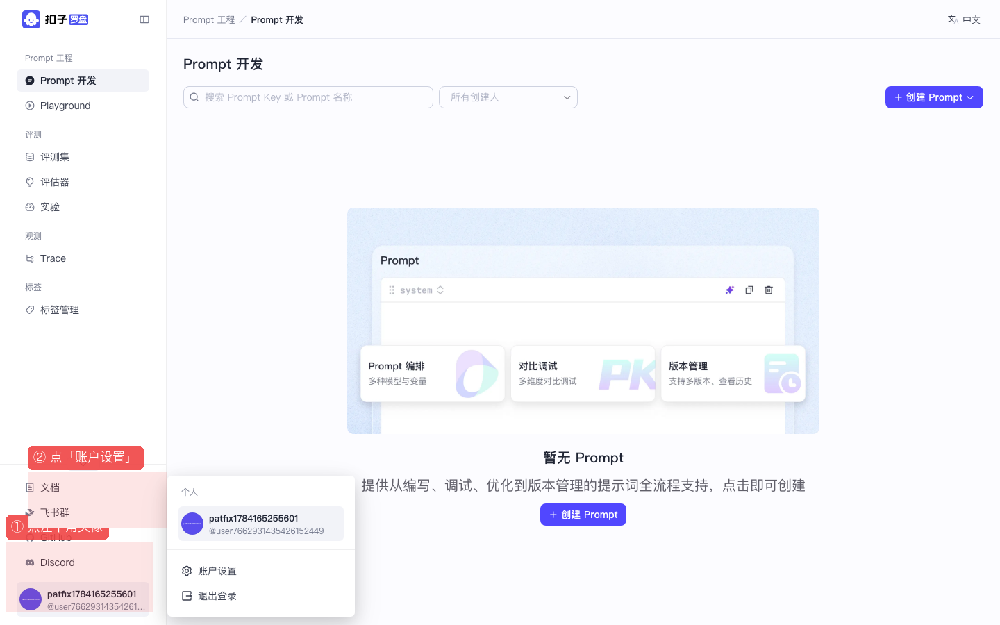
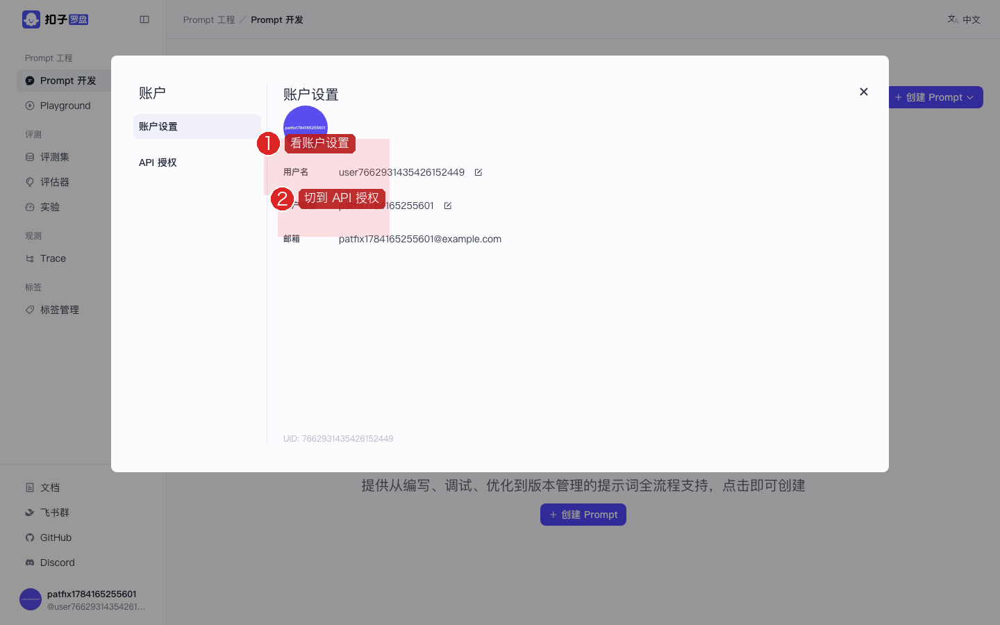
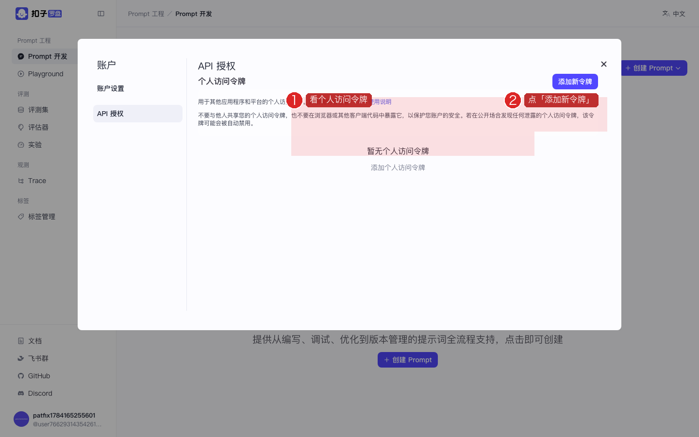
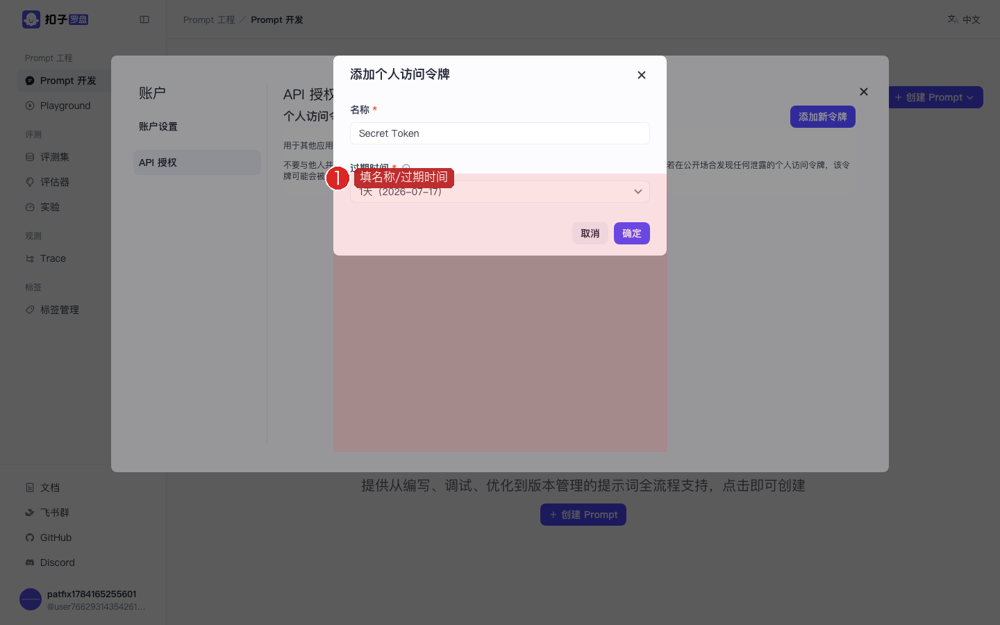
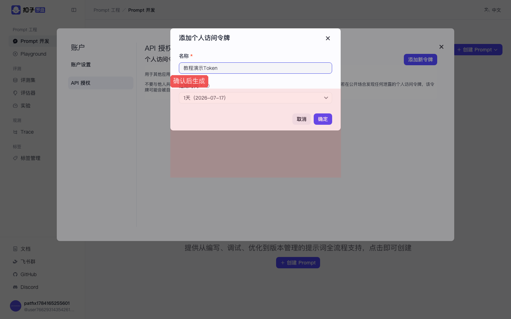
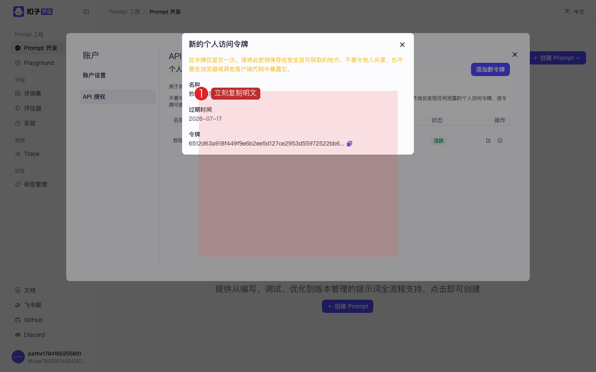

Coze Loop 开源实战 · P07 / 共 8 课 · ≈15 min · 跟做版
P07 · 账户设置与 OpenAPI PAT
创建个人访问令牌，给脚本 / SDK 调 Loop OpenAPI 用。 截图红框为操作重点。上级：总目录。
🎯 本课目标（先读再动手）
- 分清 PAT（访问 Loop 平台 API）与 Claude Key（访问 Anthropic）不是同一个东西。
- 从账户设置进入 API 授权，创建个人访问令牌。
- 学会立刻复制并安全保存明文（只显示一次）。
学完怎样算过关：令牌列表出现新条目；明文已存到安全位置；你能说清 PAT 用来调 Loop，不是调 Claude。
图上的红色编号框标出你要点的位置。每一大步都写了目的（为什么做）和作用（做完得到什么）。请按「目标 → 步骤文字 → 对照截图」顺序做；做完看每步绿色验收。
1
打开「账户设置」
目的：进入个人账户弹窗，为创建平台 API 令牌找到正确入口。
作用：PAT 与 Claude Key 完全不同：PAT 证明「你有权调用 Coze Loop OpenAPI」；Claude Key 证明「你有权调用 Anthropic」。别混用。
- 点侧栏左下角头像
- 在菜单点 账户设置（注意是「账户」）

图：①头像 ②账户设置。

图：账户弹窗左侧可切换「账户设置 / API 授权」。
✅ 验收：弹出「账户」大窗口。
2
切换到「API 授权」
目的：从账户弹窗切到「个人访问令牌」管理页。
作用：这里集中管理 PAT 的创建、列表与吊销。脚本 / SDK 调 Loop OpenAPI 时，会把 PAT 放在请求头里做鉴权。
- 左侧点 API 授权
- 看到「个人访问令牌」区域
- 若为空，会提示去添加

图：API 授权页。红框标出「添加新令牌」按钮。
✅ 验收：能看到「添加新令牌」按钮。
3
创建令牌并立刻复制
目的：生成一枚新的 PAT，并在明文只显示一次时把它存好。
作用：有了 PAT，你才能用 curl / SDK / 自动化脚本操作 Loop（建评测、拉 Trace 等），而不必每次在浏览器点。泄露等同于账号权限外泄，务必保密。
- 点 添加新令牌
- 填写名称，例如
教程演示Token - 选择过期时间
- 确认创建
- 立刻复制明文令牌——只显示一次，关掉就没了
- 存到本地密码管理器；不要发到群里、不要提交 Git

图：创建令牌表单。

图：填好名称等信息。

图：创建成功弹窗。黄字警告「只显示一次」——现在就复制！
✅ 验收：令牌列表出现新条目；你已把明文存到安全位置。
忘记复制怎么办？
无法再查看明文。只能删除旧令牌，再新建一个。